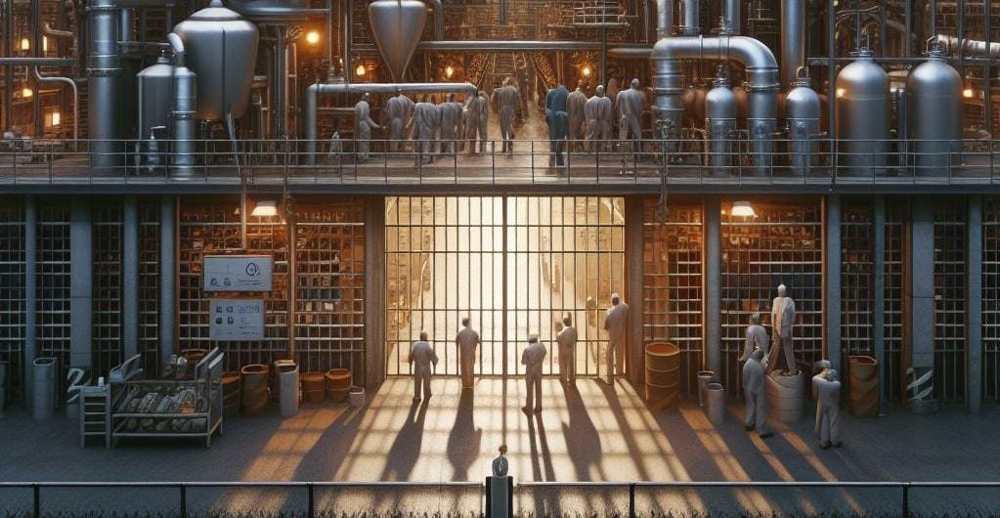

NUESTRO TRABAJO
La Industria Penitenciaria tiene como soporte legal, un convenio de coordinación interinstitucional, entre la autoridad penitenciaria conjuntamente con autoridades corresponsables, y la participación del sector privado y social, con el propósito de favorecer la inclusión laboral de las personas privadas de la libertad mediante la existencia de proyectos industriales a través del impulso al sistema de concesiones, permitiendo a los particulares establecer plantas maquiladoras que permitan y amplíen la existencia de ofertas de trabajo.
Estas concesiones estarán sujetas, en primer término, a los espacios físicos disponibles, a las disposiciones de la ley, y al convenio de coordinación Interinstitucional. Dentro de este convenio, se establecen las bonificaciones empresariales en el pago de ciertas obligaciones tributarias, principalmente de impuesto sobre la renta, impuestos sobre nóminas, entre otros, con el objetivo de que el pago realizado por uso de suelo sea equivalente a la conservación, mejoras y adecuaciones de las naves industriales a través de mantenimiento preventivo y correctivo de las mismas.

Las empresas que participan en la Industria, no solo son un ente productivo o empleador, sino un capacitador que coadyuva en el proceso de reinserción, es decir, son empresas socialmente responsables.
Por tal motivo, la importancia de la inversión económica por parte del sector empresarial para la remodelación y construcción de espacios de reinserción social, y la construcción de plantas productivas dentro de las instalaciones del centro, donde se desarrolle la industria penitenciaria y se facilite el registro de la propiedad industrial, creando planes de trabajo penitenciario, que tienen como finalidad diseñar los programas de desarrollo de la Industria Penitenciaria a corto y largo plazo, creando oportunidades de empleo y líneas de distribución de productos que se encuentren vinculados con el sector empresarial de la región , permitiendo a los empresarios, a gozar de beneficios en la reducción de costos de producción, generar mano de obra calificada a través de la capacitación para el trabajo, fomentar en la población penitenciaria una cultura de participación laboral activa, y brindar a los internos vínculos laborales con el sector empresarial para que la persona privada de su libertad obtenga un trabajo digno dentro de la industria, que le proporcione capacitación para el mismo, y asistencia técnica para que continúe, en su caso, con su vida laboral en el exterior.
Industria Penitenciaria esta contextuada en el actual mercado laboral, por lo que constantemente mejora su esquema de administración, revisando y vigilando los procedimientos de organización, así como sugiriendo nuevas líneas de producción, y estrategias de comercialización, que permitan la viabilidad y sustentabilidad de los proyectos y planes de la Industria. Contando con los más estrictos mecanismos de control de calidad para los insumos y productos, donde incluso se prevén sistemas de certificación.